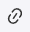
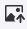
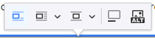
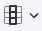
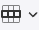
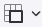
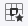

Most capabilities are self-explanatory. Only special capabilities are described here.
Use Ctrl+V to insert text from the clipboard. Use Ctrl+Shift+V to insert formatted text from the clipboard with omitting the formattings.

You can link to webpages and to internal pages. For linking to an internal page you must enter the page ID. When viewing a page the ID is displayed at the top right page corner. If you don't know the page ID you can enter the page title or a part of it. After saving the page Minerva will display you for every title link a possible page for selecting.
Use  for selecting an image file from disk for inserting it at the current cursor position.
If you have an image in the clipboard you can insert using Ctrl+V.

Click on a graphic and the image contextual toolbar is displayed. When you insert a graphic, the first mode is preselected. This is the most useful mode in most cases. Mode 2 allows the text to flow around the graphic. Mode 3 displays the graphic as a paragraph between the text paragraphs. Button 4 is for the subtitle and button 5 is for the alt text. We do not use buttons 4 and 5.
Klick the table button and select how many rows and columns you need. You can add or remove rows or columns later.
click anywhere in the table and then click on the gadget at the left top corner.
Select table and press Delete key.
To type before or after a table easily, select the table, then press the Arrow key once, depending on where you want to add content – before or after. The table is no longer selected and whatever text you type will appear in the desired position.
Click anywhere in the table and then click the enter icon at the top or bottom border.
The editor allows nesting tables inside other table’s cells. This may be used for creating advanced charts or layouts based on tables. The nested table can be formatted just like a regular one.
When focusing a table the table contextual toolbar is displayed:

Header column
Insert column left/right
Delete column
Select column

Header row
Insert row above/below
Delete row
Select row

Merge ...
Split cell ...
Border
Background
Alignment

Border
Background
Alignment (Default is center)